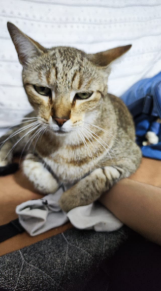
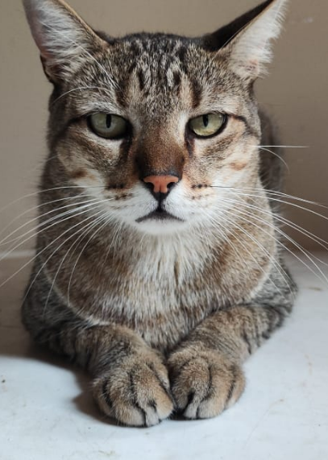

- Dondon é um gato muito fofo, e ele é o meu(Karen)
- Ele é mais clarinho que o tincon e até a veterinária dele
disse que ele tem pelagem douradinha - Ele é introvertido
- Ou seja, muito fofo

- Tincon parece um cachorro, e ele é
da minha mãe - Ele é mais escuro que o Dondon, e
seu rabo é mais comprido também - Ele é extrovertido
- Concluindo, uma versão desatualzada
de cachorro